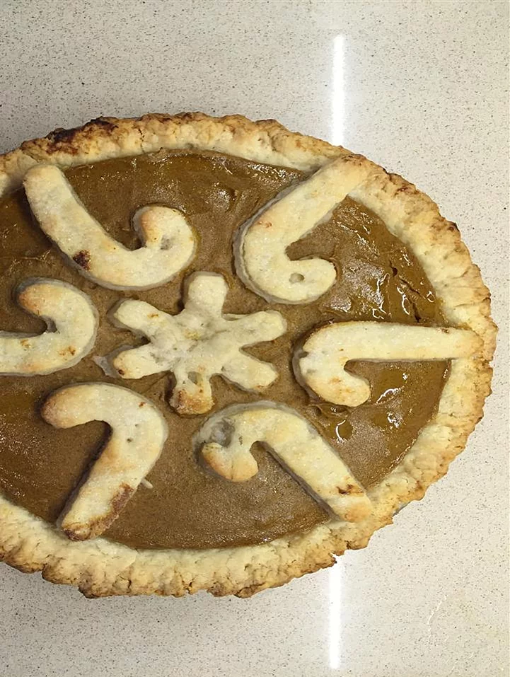

Pumpkin Pie

Description
Moist smooth pumpkin pie free of eggs and corn.
Per Serving:
451 calories; protein 6.6g; carbohydrates 48.3g; fat 25.4g; cholesterol 41.6mg; sodium 404.4mg.
Ingridents
- 2 ½ cups unbleached all-purpose flour
- ¾ cup butter, cut into squares
- ½ cup coconut oil
- 3 tablespoons white sugar
- ½ teaspoon salt
Steps
- Preheat oven to 450 degrees F (230 degrees C).
- Mix all-purpose flour, butter, coconut oil, 3 tablespoons sugar, 1/2 teaspoon salt together in a bowl until well distributed. Stir in water and whiskey to form a clumpy dough. Divide dough in half; place in separate containers. Cover and refrigerate until ready to use.
- Pour pumpkin, condensed milk, chia seeds, vanilla extract, cinnamon, 1/2 teaspoon salt, ginger, cloves, and nutmeg into a blender. Blend filling until smooth.
- Line a pie pan with 1 of the dough halves. Pour filling over the pie crust. Roll out the rest of the dough onto a flat work surface and cut into decorative shapes of your choice. Arrange shapes on top of the filling. Sprinkle 2 tablespoons sugar on top.
- Bake pie in the preheated oven until crust starts to brown, about 20 minutes. Cover with aluminum foil and reduce heat to 325 degrees F (163 degrees C); continue baking until set, about 40 minutes.